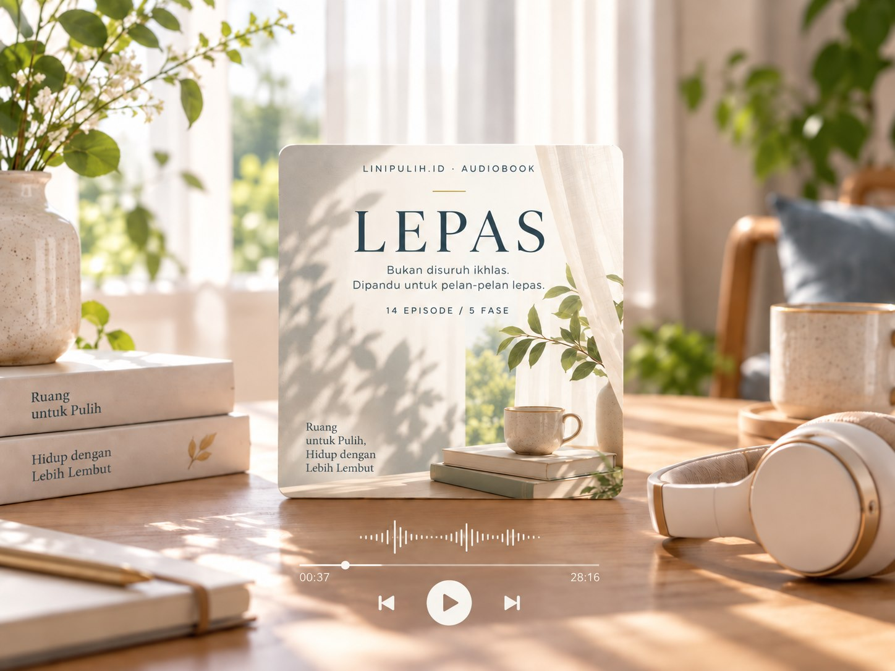

01
Hari 1–3
AKUI
Mengakui rasa sakit, mengurangi rasa malu, dan membangun pegangan untuk hari yang berat.
- DAY 1Sakit Ini Nyata
- DAY 2Berhenti Bohongi Diri Sendiri
- DAY 3Emergency Protocol
Untuk kamu yang tahu hubungan itu sudah selesai, tapi masih merasa terikat.
Pahami apa yang terasa berat, kenali polanya, lalu mulai satu langkah kecil melalui perjalanan audio yang terarah.
14 episode · 5 fase · sekitar 120–160 menit
Cuplikan audio sedang disiapkan.
Belum ada audio atau transkrip final pada pratinjau ini. Daftar episode tersedia di bawah untuk membantumu mengenali isi LEPAS.

Kamu ingin melanjutkan hidup. Tapi saat sepi, capek, atau teringat sesuatu, dorongan untuk mencari dia muncul lagi.
Seolah membaca sekali lagi bisa membuat semuanya lebih masuk akal.
“Kenapa aku masih begini, padahal aku tahu hubungan itu menyakitkan?”
Saran ada banyak. Kamu butuh urutan yang bisa diikuti.
Sesudah hubungan berakhir, beberapa rutinitas masih bisa terasa akrab. Mengecek profil, misalnya, bisa menjadi respons saat rasa sepi datang. Coba lihat urutannya.
Contoh pola yang mungkin terasa familiar, bukan diagnosis. Mengenali urutannya bisa menjadi awal untuk memilih respons yang berbeda.
Ini yang di sini kita sebut loop: urutan respons yang berulang. Memahaminya tidak berarti mendiagnosis diri atau menyimpulkan bahwa semua rindu adalah kecanduan.
LEPAS menyusun pemahaman dan langkah pemulihan dalam perjalanan yang bisa kamu dengarkan secara privat, satu hari demi satu hari.
Langkah Efektif Pulih dari
Attachment yang Salah.
Audiobook self-help yang membahas patah hati melalui psikologi, attachment theory, kebiasaan emosional, dan langkah praktis sehari-hari.
Dari mengakui rasa sakit sampai membangun kembali arah hidup. Kamu diajak memahami pengalamanmu, tanpa harus menceritakannya di ruang publik.
Materi edukasi dan self-help. Bukan terapi atau janji pulih dalam waktu tertentu.
Ikuti urutannya.
Beri ruang untuk memproses.
Mengakui rasa sakit, mengurangi rasa malu, dan membangun pegangan untuk hari yang berat.
Memahami pola keterikatan dan melihat kembali hubungan dengan lebih jernih.
Mulai melepas kebiasaan yang menahan, dari mengecek layar sampai mengulang cerita lama.
Mengenal diri di luar hubungan, mengarahkan energi, dan membangun standar baru.
Mencari penutupan yang realistis dan membawa pemahaman baru ke langkah berikutnya.
Kamu bisa mendengarkan tanpa harus menatap layar terus-menerus atau menyusun cerita untuk orang lain. Pilih waktu dan tempat yang terasa nyaman.
Audio adalah pilihan format. Kenyamanan dan manfaatnya bisa berbeda untuk setiap orang.
Bahasa untuk mengenali rasa dan kebiasaan yang selama ini sulit dijelaskan.
Arah untuk memproses rasa, menata kebiasaan digital, dan melihat kembali cerita hubunganmu.
Ruang untuk mengenali identitas, kebutuhan, serta standar baru di luar hubungan itu.
Baca panduan di Member Area. Gunakan earphone bila nyaman dan pilih tempat yang tenang.
Mulai dari Day 1, lalu lanjut sesuai urutan. Kamu boleh pause atau mengulang saat belum siap lanjut.
Setelah mendengarkan, beri ruang sebelum kembali membuka media sosial. Pemulihan tidak perlu dikejar.
LEPAS bisa menjadi pilihan jika kamu mencari pemahaman dan panduan self-help yang terstruktur.
Kamu membutuhkan diagnosis, konseling personal, penanganan krisis, atau cara membuat mantan kembali. LEPAS tidak menyediakan layanan tersebut dan tidak menjanjikan hasil tertentu.
Kenali isinya, pertimbangkan kebutuhanmu, lalu pilih saat kamu merasa siap.
Bukan disuruh ikhlas. Dipandu untuk pelan-pelan lepas.
Rp129.000
Rp129.000
Sekali bayar · Harga utama
Pembayaran belum dibuka. Checkout resmi sedang disiapkan.
Jika LEPAS tidak sesuai kebutuhanmu, tersedia garansi uang kembali selama 7 hari setelah pembelian.
Cara pengajuan dan proses pengembalian dana akan dicantumkan sebelum transaksi dibuka. Lihat ketentuan garansi.
Kenali format, akses, dan batasan LEPAS sebelum memilih.
LEPAS adalah audiobook self-help tentang pemulihan setelah hubungan dan keterikatan emosional. Ada 14 episode dalam 5 fase, dengan total sekitar 120–160 menit, untuk diikuti sebagai perjalanan 14 hari.
Tidak. Empat belas hari adalah struktur mendengarkan, bukan batas waktu pulih. Kamu boleh berhenti sejenak atau mengulang audio yang terasa relevan. Pengalaman setiap orang bisa berbeda.
Setelah pembayaran dikonfirmasi melalui layanan pembayaran resmi, ikuti petunjuk akses ke LEPAS | Member Area. Mulai dari Welcome, baca Start Here, lalu dengarkan Day 1. Tautan undangan privat diberikan melalui alur pembelian resmi.
LEPAS adalah materi edukasi dan self-help, bukan diagnosis, terapi, atau pengganti pendampingan profesional. Jika kamu membutuhkan dukungan personal, kamu dapat mencari bantuan profesional yang sesuai.
Master penawaran LEPAS mencakup garansi 7 hari uang kembali. Hubungi kanal dukungan resmi untuk pengajuan. Rincian cara pengajuan dan proses pengembalian dana harus tersedia sebelum transaksi dibuka.
Pembayaran belum dibuka pada versi pratinjau ini. Harga utama yang ditampilkan adalah Rp129.000. Tombol pembelian akan menuju checkout resmi setelah layanan pembayaran siap.